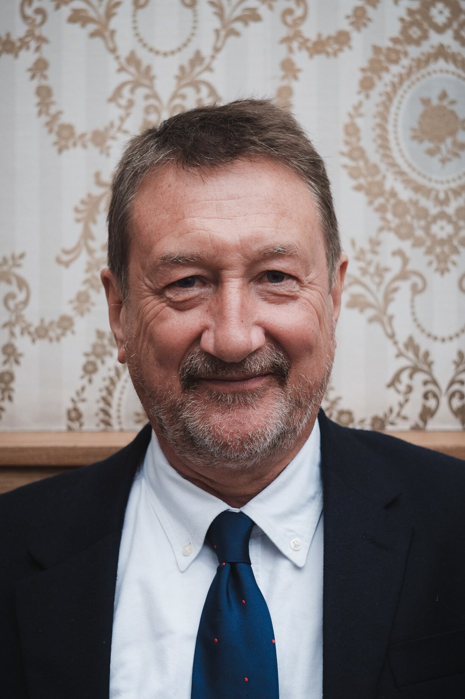

Interview de Steven Knight par la BBC

Qu'est-ce que Peaky Blinders
La série est basée sur des événements réels. Mes parents, et en particulier
mon père, avaient des souvenirs alléchants de ces personnes depuis l'âge de
neuf ou dix ans. Ils étaient incroyablement bien habillés, ils étaient
incroyablement puissants, ils avaient beaucoup d'argent dans une région où
personne n'en avait et... c'étaient des gangsters ! D'une certaine manière,
je veux que Peaky Blinders soit une sorte de vision de ce monde à travers
les yeux d'un enfant de 10 ans, parce que les hommes sont plus intelligents,
plus forts et plus beaux, les chevaux sont plus grands et tout est grand et
intimidant pour un enfant.
Parlez-nous des personnages
Les personnages masculins principaux sont trois frères. Arthur, l'aîné,
serait naturellement le chef de la bande, mais Tommy, le plus jeune frère,
est naturellement un leader. L'une des questions plus générales que je
voulais souligner est que tous ces hommes sont revenus de la Première Guerre
mondiale où ils ont reçu l'ordre de commettre des meurtres de masse tous les
jours à une échelle industrielle sans précédent. Ils sont revenus très abîmés et
violents à la suite de leurs expériences. Vous avez donc cette dynamique très
intéressante d'hommes revenant du front et découvrant qu'ils ne peuvent pas
vivre une vie ordinaire.
A-t-il été difficile d'écrire certaines des scènes les plus violentes ?
Je tiens toujours à ce que tout acte de violence ait une conséquence pour l'histoire.
Dans le monde réel, il est très rare qu'un acte de violence n'ait pas de conséquences
importantes. Ainsi, dans un premier épisode, l'utilisation des lames de rasoir a des
conséquences qui durent tout au long de la série.
Article de Presse
Télérama
Par Pierre Langlais, publié le 12 mars 2015 à 8h00
“Peaky Blinders” : plongée brutale et élégante dans le quotidien des gangsters britanniques
Dans la rue boueuse d'une cité ouvrière, un jeune homme au regard d'acier, habillé avec style,
chevauche un majestueux étalon noir. Sur son passage, on s'écarte, on se cache, on s'incline.
Les enfants le contemplent les yeux pleins d'admiration, les passants baissent la tête, la police
le salue par son nom. En guise de couronne, il porte une casquette grise avec deux lames de rasoir
cousues dans la visière (peak). Une arme redoutable.
En Savoir Plus
Première
Par François Rieux, publié le 9 octobre 2019 à 12h52
Peaky Blinders : la saison de trop ?
La saison 5 mettant en vedette le clan Shelby est actuellement disponible sur Netflix. Moins de mafia,
moins de bootlegging, plus de politique, un méchant bateau et une résurrection pas vraiment réussie...
Le show de Steven Knight n'aura tenu que partiellement ses promesses.
À la fin de la saison 4, nous avions laissé Tommy Shelby au sommet. Après avoir dézingué magistralement
Luca Changretta, rayé de la carte le frère-ennemi Alfie Solomons, redoré le blason des Peaky et atteint
les hautes sphères de l'Etat, Tommy était devenu le boss. Un final de haut vol immortalisant la suprématie
du clan Shelby, la réussite sociale de son chef de famille. Un point d'orgue qui aurait pu être un point
final.
En Savoir Plus